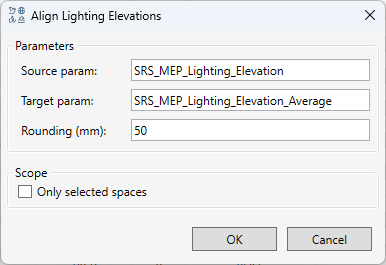

Align Lighting Elevations
Table of contents
Purpose
The tool automatically calculates a single average elevation for groups of lighting fixtures of the same type within the same space and writes it to the specified instance parameter. This eliminates the “Various” value in schedules caused by structural slopes in the model.
When to Use
Use the tool before finalizing schedules if you observe the following:
- A lighting fixture group in a schedule shows “Various” in the elevation parameter.
- Fixtures are mounted on a sloped structure or slab with a variable elevation.
Interface

| Field | Description | Default |
|---|---|---|
| Source param | Name of the instance parameter from which the individual elevation of each fixture is read (in mm). | SRS_MEP_Lighting_Elevation |
| Target param | Name of the instance parameter to which the rounded average value is written. | SRS_MEP_Lighting_Elevation_Average |
| Rounding (mm) | Rounding step for the result, in millimeters. | 50 |
| Only selected spaces | If checked — only fixtures in spaces selected before launch are processed. If unchecked — all fixtures in the project are processed. | unchecked |
How to Use
Whole-project mode
- Uncheck Only selected spaces (or leave it unchecked by default).
- Adjust parameter names and the rounding step if needed.
- Click OK (or press
Enter). - Wait for the operation to complete and review the report.
Selected-spaces mode
- Before launching the plugin, select one or more Space elements (MEP Space) in the model.
- Check Only selected spaces.
- Click OK.
Important: if the checkbox is checked but no Spaces are selected, the plugin will show an error and will not write any values.
Algorithm
- All lighting fixtures (
OST_LightingFixtures) are collected — either for the whole project or filtered by selected spaces. - The containing space is resolved for each fixture using the following sequence: built-in
Spaceattribute, then the placement point, then two additional probe points — 1.5 m and 3 m below. Fixtures with no resolved space are skipped and counted as “Skipped” in the report. - The plugin automatically detects the parameter type (Length or Number) and performs the necessary unit conversions.
- Fixtures are grouped by the pair Space + Type (the space display name includes its number and name).
- The arithmetic mean of the source parameter value is calculated within each group.
- The average is rounded to the nearest multiple of the rounding step:
round(avg / step) * step. - The rounded value is written to the target parameter of every fixture in the group — including single-fixture groups and zero-range groups.
- A report is shown.
Report
After the operation completes, a dialog box appears with summary information.
Main instruction contains:
- Number of processed groups and fixtures.
- Number of skipped fixtures with no space.
- Number of trivial groups (1 fixture or range < 1 mm) — they are written but excluded from the details.
Content area shows the group with the largest range and the path to the full report file.
“Show details” spoiler contains up to 20 groups sorted by range descending. It only includes groups with ≥ 2 fixtures and range ≥ 1 mm.
Line format:
101 Corridor
Luminaire Family: Type Name
5 fixtures | avg = 2850 mm | range = 45 mm
| Field | Value |
|---|---|
| avg | Written rounded average (mm) |
| range | Spread = Max − Min from the source parameter (mm) |
Full CSV file is saved to %APPDATA%\Sener\BimTools\Reports\Align Lighting Elevations\. The file contains all report-worthy groups with columns: Space Number, Space Name, Family: Type, Count, Avg (mm), Min (mm), Max (mm), Range (mm).
Groups with a large range require inspection: fixtures may be placed at different levels or the parameter may be filled incorrectly.
Settings
All entered values are automatically saved to %APPDATA%\Sener\BimTools\Settings.json and restored on the next launch.
Troubleshooting
| Situation | Cause | Solution |
|---|---|---|
| The command runs but the target parameter does not change | The Target param does not exist or is read-only |
Check the parameter name and ensure it is a writable instance parameter |
| Message “Please select at least one Space” | The Only selected spaces checkbox is checked but no Spaces are selected | Select Space elements in the model before launching |
| The “range” value in the report is unexpectedly large | The source parameter was filled manually with errors, or fixtures are genuinely placed at different elevations | Inspect the model and the source parameter values |